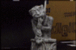

| IRIS Home |
| IRIS Foundation |
| IRIS-XT |
| IRIS-3D |
| IRIS Runtime |
| Osiris |
| Source code |
| Discussions |
| Datasets |
| LiveJournal |
| References | COMRADE Home |
| About me |
Datasets
What you will find here
This page contains an assorted list of outputs from the IRIS system. It also contains the datasets used by IRIS-3D for recovery of depth and 3D models. More will be added in due course of time. For now, enjoy!
The outputs are categorised as:
Outputs from the IRIS-XT engine

Outputs from the IRIS-3D engine
|  | The left image shows one of the 16 images of the subject. The right image shows the result of uncalibrated 3D reconstruction by the IRIS-3D's space carving engine. Click on the left image to view all the 16 images | |
| The left image shows one of the two images of the scene (stereo pair). The right image shows the result of uncalibrated depth recovery using IRIS-3D's constant-window stereovision engine. Click on the left image to view both the images. Click on the right image to view the depth maps recovered at different resolutions. | ||
| The left image shows one of the two images of the scene (stereo pair). The right image shows the result of depth recovery using IRIS-3D's realtime stereovision engine. Click on the left image to view both the images. Click on the right image to view the depth maps recovered at different resolutions. |
You can find more information on these results (and why they are as they are) in the Discussions section.